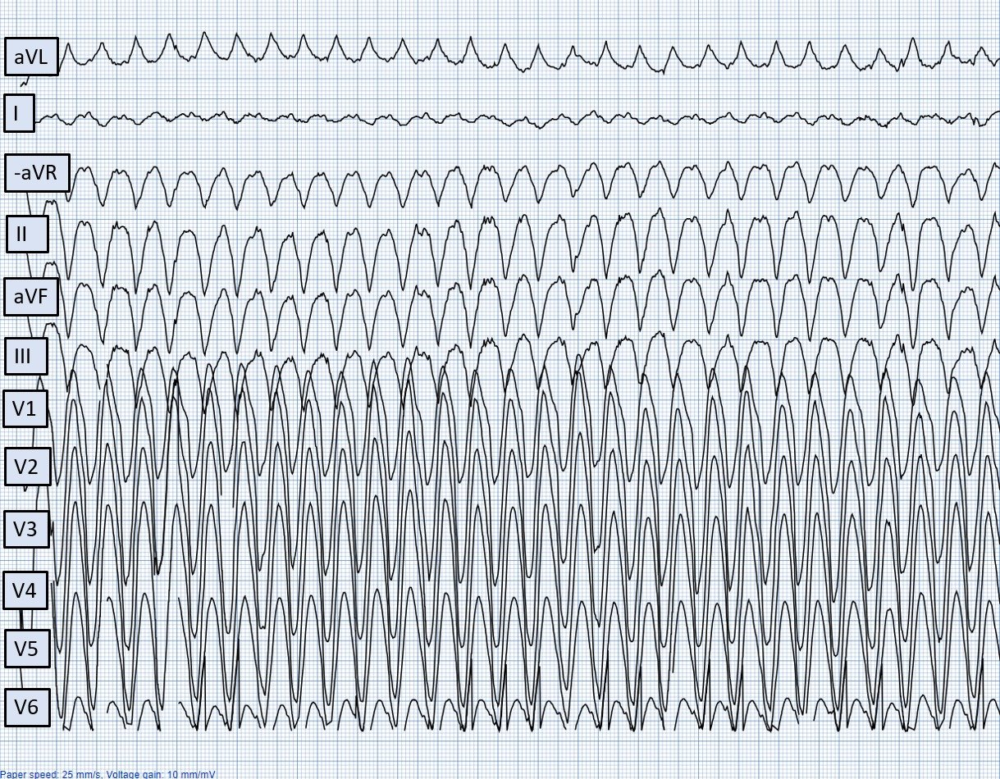
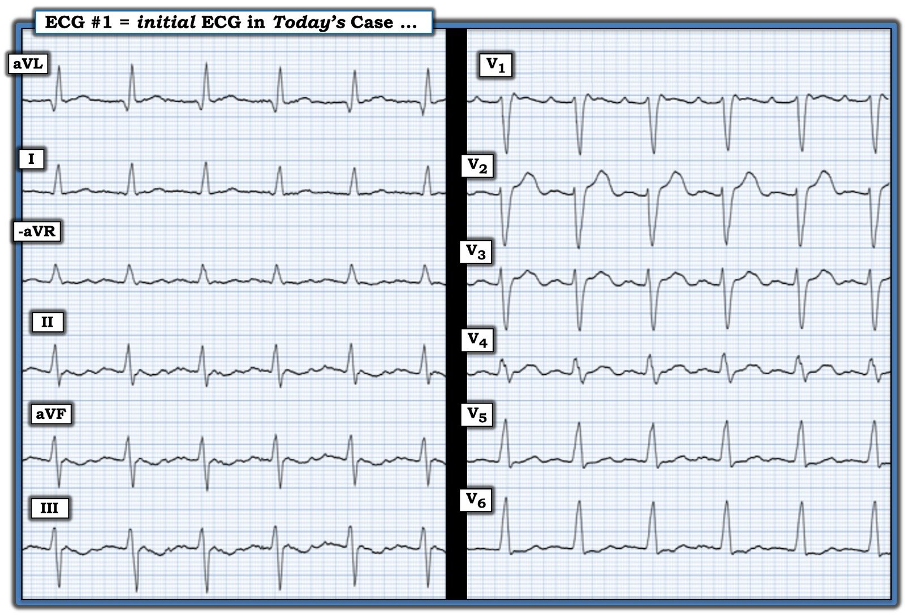
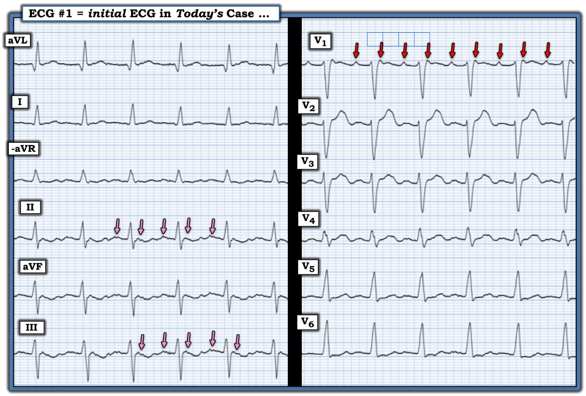
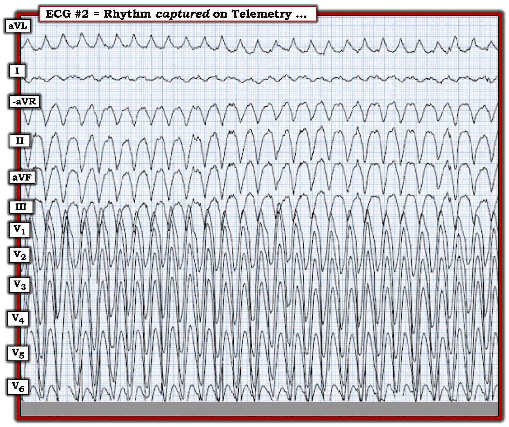
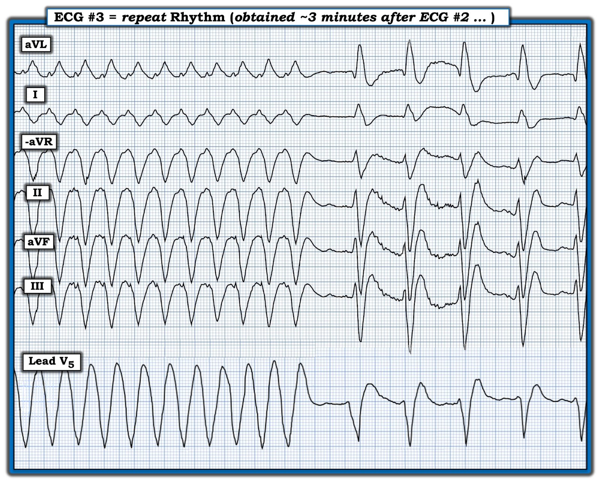
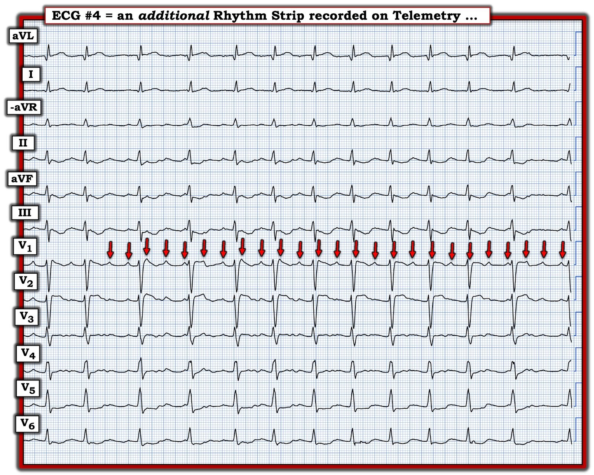
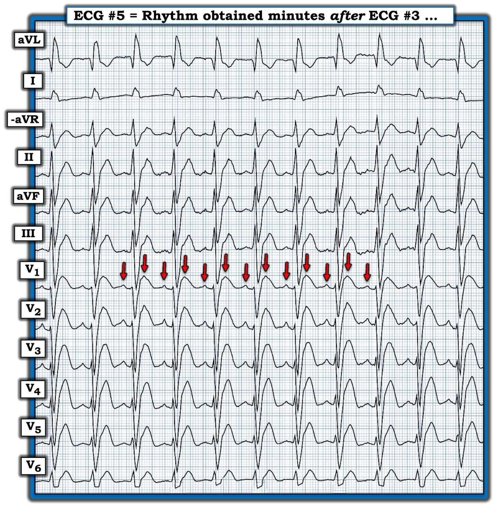
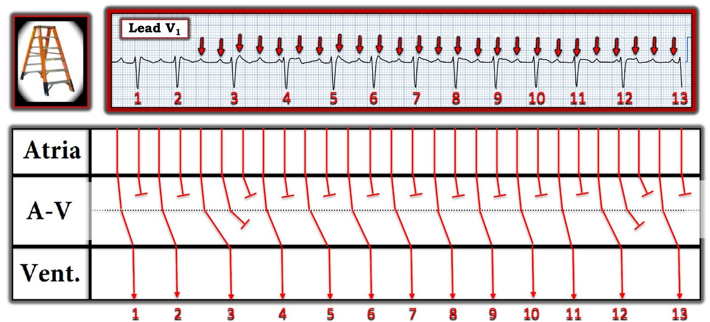

26/01/2025 — Những nhịp tim đầy thử thách ở một người đàn ông ngoài 80 tuổi
Bản dịch tiếng Việt của bài "Challenging Rhythms in an 80-something Man" – Dr. Smith’s ECG Blog. Giữ nguyên toàn bộ 8 hình ảnh của bản gốc.


Tác giả: Magnus Nossen và Ken Grauer
Bạn được xem điện tâm đồ ở Hình 1 — ghi từ một người đàn ông ngoài 80 tuổi. Ngoài nhịp xoang — Bạn còn thấy gì khác trong bản ghi này?
- LƯU Ý: Điện tâm đồ ở Hình 1 ban đầu được ghi theo định dạng Cabrera (xem Bình luận của BS. Grauer ở cuối trang trong bài ngày 26 tháng Mười năm 2020 để ôn lại định dạng Cabrera). Hình được ghi với tốc độ giấy 50mm/giây; bên dưới, hình đã được “nén” lại thành 25mm/giây.


Hình 1: Dù thoạt nhìn nhịp ở Hình 1 có thể bị nhầm là nhịp nhanh xoang, thực ra đây không phải nhịp đó. Thay vào đó, có hoạt động nhĩ 2:1, thấy rõ nhất ở chuyển đạo V1 (xem Hình 2).
Có nhiều manh mối gợi ý rằng nhịp ban đầu hôm nay không có nguồn gốc từ xoang.
- Tần số ~100/phút là nhanh đối với một người lớn tuổi ngoài 80 — trừ khi đang có điều gì cấp tính xảy ra (nhiễm khuẩn, sốc, v.v.).
- Nếu sóng dương ở chuyển đạo V1 là một sóng P xoang đơn độc — thì khoảng PR sẽ dài hơn dự kiến nếu đây là nhịp nhanh xoang.
- Bất cứ khi nào khoảng PR trông dài hơn mức đáng có đối với một nhịp trên thất — có thể có một sóng P khác ẩn trong phức bộ QRS! (Đây là “Quy tắc Bix” — xem Pearl #1 trong Bình luận của BS. Grauer ở bài ngày 16 tháng Bảy năm 2024).
- Không có sóng P dương rõ rệt ở chuyển đạo II — như lẽ ra phải có nếu là nhịp xoang. Ngoài ra, sóng P xoang thường không dương hoàn toàn ở chuyển đạo V1 như trong điện tâm đồ hôm nay (trừ khi có bất thường nhĩ phải (RAA)).
- Sự hiện diện của một sóng giả r’ ở chuyển đạo V1 thường là một “chỗ ẩn nấp” của sóng P thêm hoặc sóng P ngược dòng.
Grauer: Các chuyển đạo “ưu tiên” của tôi khi tìm hoạt động nhĩ kín đáo trong một nhịp trên thất — là chuyển đạo II và V1 (là những chuyển đạo tốt nhất để xem trước tiên) — nhưng cũng cả chuyển đạo III, aVF và aVR, mỗi chuyển đạo này đều có thể hữu ích đến bất ngờ để tìm sóng P ngược dòng hoặc sóng cuồng nhĩ.
Diễn giải: Nhịp trên điện tâm đồ ban đầu trong ca hôm nay là nhịp trên thất với dẫn truyền AV 2:1. Tần số thất ~100/phút. Vì có 2 sóng P trong mỗi khoảng R-R, tần số nhĩ phải gấp đôi tần số thất, tức ~200/phút. Chẩn đoán phân biệt là giữa nhịp nhanh nhĩ — ATach (Atrial Tachycardia) với cuồng nhĩ — AFlutter (Atrial Flutter). Dù có thể có hình ảnh “răng cưa” kín đáo ở các chuyển đạo thành dưới — tần số nhĩ ~200/phút là chậm đối với cuồng nhĩ chưa được điều trị.


Bệnh sử: Hóa ra bệnh nhân hôm nay là một người đàn ông ngoài 80 tuổi có tăng huyết áp lâu năm và rung nhĩ kịch phát. Rung nhĩ đã được kiểm soát tốt bằng Flecainide trong nhiều năm. Lần này ông nhập viện vì một cơn ngất lúc nghỉ.
Khi được hỏi, bệnh nhân kể có những cơn hồi hộp đánh trống ngực từng lúc trong những tháng gần đây. Điện tâm đồ ban đầu bị đọc sai là nhịp xoang. Ông được nhập viện với chẩn đoán nghi ngờ hội chứng suy nút xoang (rung nhĩ kịch phát giải thích các cơn hồi hộp — và các đợt nhịp chậm giải thích cơn ngất).
Nossen: Ban đầu tôi xem điện tâm đồ ở Hình 1 — chỉ biết rằng bệnh nhân là một người đàn ông cao tuổi đang dùng Flecainide, đến khoa cấp cứu (ED) vì ngất. Tôi được cho biết một cơn nhịp nhanh QRS rộng — WCT (Wide Complex Tachycardia) đã được ghi lại trên theo dõi từ xa (telemetry). Tuy nhiên, vì đã nhận thấy hoạt động nhĩ 2:1 ở chuyển đạo V1 — tôi hoàn toàn không tin rằng cơn đó là VT.
Ở Hình 3 — là nhịp nhanh QRS rộng đã được ghi lại trên theo dõi từ xa:


Hình 3: Điện tâm đồ ở Hình 3 cho thấy một WCT đều với tần số tim 180/phút. Có sự chồng lấp của 5 chuyển đạo trước tim mà chúng ta thấy, và phần lớn bản ghi chuyển đạo V6 đã bị mất. Trong vòng khoảng 3 phút, theo dõi từ xa đã ghi được sự chuyển nhịp tự phát của nhịp này, như thể hiện ở Hình 4 dưới đây.


Bạn nhận định thế nào về tình huống lâm sàng trong ca hôm nay cho đến lúc này?
- Bạn có đồng ý rằng nhịp WCT này là VT không?
- Có thể có những cách giải thích nào khác?
- Bạn có khuyến nghị đặt ICD cho bệnh nhân này không?
Nossen: Tôi đã nghi ngờ rằng nhịp nền là cuồng nhĩ trong suốt tình huống lâm sàng ở trên. Việc dùng Flecainide có thể giải thích tần số cuồng nhĩ chậm hơn dự kiến ~200/phút mà chúng ta thấy ở Hình 2. Và có lẽ một khi tần số cuồng nhĩ giảm xuống dưới 200/phút — dẫn truyền AV 1:1 của cuồng nhĩ đã trở nên khả thi (trong đó QRS giãn rộng rõ rệt mà chúng ta thấy ở Hình 4 là do ngộ độc Flecainide). Do đó — Không phải VT, mà là cuồng nhĩ 1:1 kèm QRS giãn rộng do Flecainide!
- Lưu ý của Nossen: Tôi đã cố gắng hết mức có thể để xem lại, tìm mối tương quan giữa liều Flecainide và tần số nhĩ của cuồng nhĩ trong thời gian bệnh nhân nằm viện. Trước khi nhập viện — bệnh nhân dùng Flecainide 150 mg ngày hai lần (bid) (300 mg/ngày), đây là liều thuốc cao. Với liều này — tần số nhĩ dao động trong khoảng ~180-200/phút trong 24 giờ sau nhập viện. Cuối cùng, Flecainide được ngưng — kéo theo tần số cuồng nhĩ tăng lên ~250-300/phút.
Để tìm hiểu thêm khả năng cuồng nhĩ nền vẫn tồn tại suốt thời gian nằm viện của bệnh nhân này — tôi đã xem lại toàn bộ các bản ghi theo dõi từ xa, 2 trong số đó được trình bày dưới đây ở Hình 5 và Hình 6.






=====================================
Về Flecainide: Ngộ độc Flecainide là tình trạng tương đối ít gặp, nhưng cực kỳ quan trọng cần nhận ra. Trong số các biểu hiện có thể có của ngộ độc Flecainide có những biểu hiện sau:
- QRS giãn rộng, có thể rõ rệt, thường với hình dạng QRS kỳ quái không giống bất kỳ dạng blốc dẫn truyền nào đã biết.
- Làm chậm dẫn truyền trong mô nhĩ và mô thất, cũng như trong hệ His-Purkinje.
- VT như một tác dụng gây loạn nhịp (proarrhythmia).
- Tạo thuận lợi cho rung nhĩ chuyển thành cuồng nhĩ như một tác dụng gây loạn nhịp khác.
- Do tác dụng bất lợi của Flecainide trên dẫn truyền qua mô nhĩ, mô thất và hệ His-Purkinje — các tác dụng chẩn đoán và điều trị thông thường của thuốc chống loạn nhịp có thể kém hiệu quả hơn nhiều (nếu còn hiệu quả). Điều này có lẽ giải thích vì sao tác dụng gây loạn nhịp do Flecainide lại kháng trị với điều trị chống loạn nhịp.
=====================================
Kết luận: Nhịp WCT trong ca hôm nay là kết quả của dẫn truyền AV 1:1 từng lúc của cuồng nhĩ (và không phải do VT). Bệnh nhân này đã dùng Flecainide lâu dài, nhưng không được dùng thuốc chẹn ß! Điều này tạo thuận lợi cho các cơn cuồng nhĩ với dẫn truyền AV 1:1.
- QRS giãn rộng rõ rệt với hình dạng QRS bất thường (giống VT) là hậu quả của ngộ độc Flecainide.
- Flecainide được ngưng. Bắt đầu dùng thuốc chẹn ß. Sau khi ngưng Flecainide, tần số cuồng nhĩ tăng lên, tiến gần 300/phút.
- Dù đã điều trị bằng thuốc chẹn ß — dẫn truyền AV 2:1 vẫn tồn tại, với đáp ứng thất ~150/phút. Khi đó đã quyết định sốc điện chuyển nhịp cho bệnh nhân — rồi chuyển ông đi triệt đốt cuồng nhĩ.
Những điểm cần học:
- Chẩn đoán cuồng nhĩ có thể khó khăn — đặc biệt khi sóng cuồng nhĩ không dễ thấy ở các chuyển đạo thường xem.
- Sóng cuồng nhĩ có thể giả dạng sóng P xoang của nhịp nhanh xoang. Luôn nghĩ đến cuồng nhĩ 2:1 khi nhịp nhanh xoang không phù hợp với bệnh cảnh lâm sàng.
- Cần biết các dấu hiệu ngộ độc Flecainide — đặc biệt là xu hướng làm chậm tần số nhĩ của cuồng nhĩ (và ở bệnh nhân không dùng thuốc ức chế nút AV — gây ra dẫn truyền AV 1:1).
- Dù hình dạng QRS trong một nhịp WCT có kỳ quái đến đâu — hãy nghĩ đến dẫn truyền AV 1:1 của cuồng nhĩ (và không phải VT) nếu bệnh nhân đang dùng Flecainide.